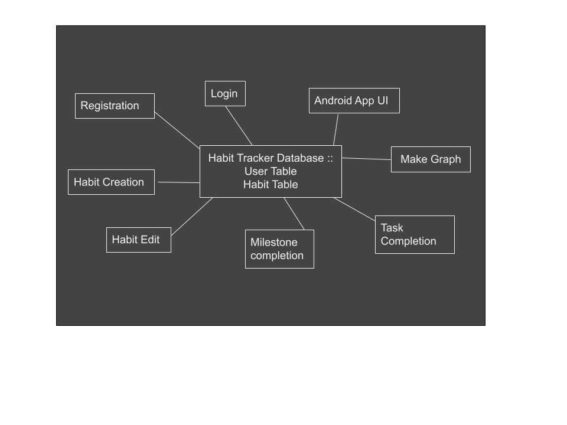

As shown above, our database is the repository and all triggering events such as
creation, deletion or editing of either user or habit will result in a change in the
repository. All of the components that surround the repository work to maintain or change
it in some way. The architecture is more stateful and reliant on knowledge sources than a
traditional database. Each function returns an attribute's state, which is then stored in
database.